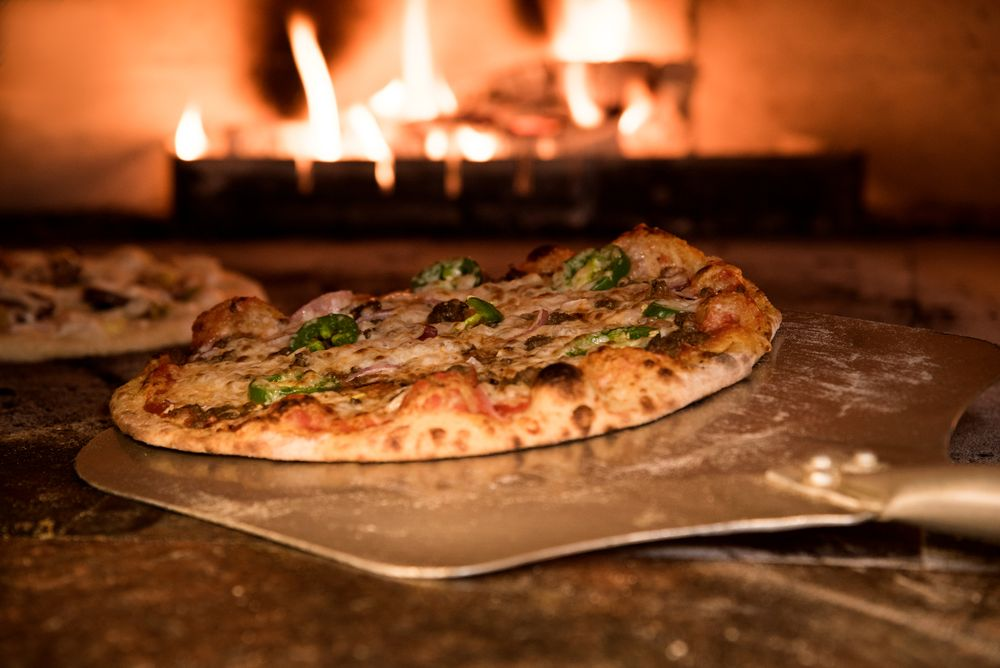
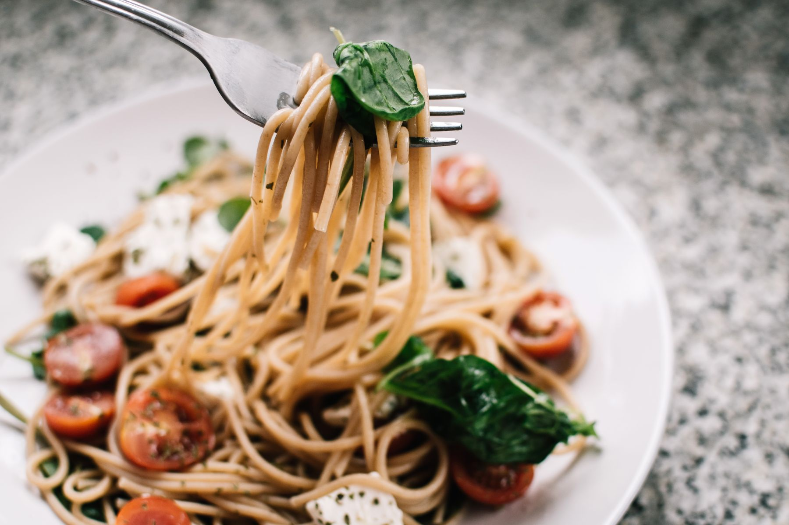
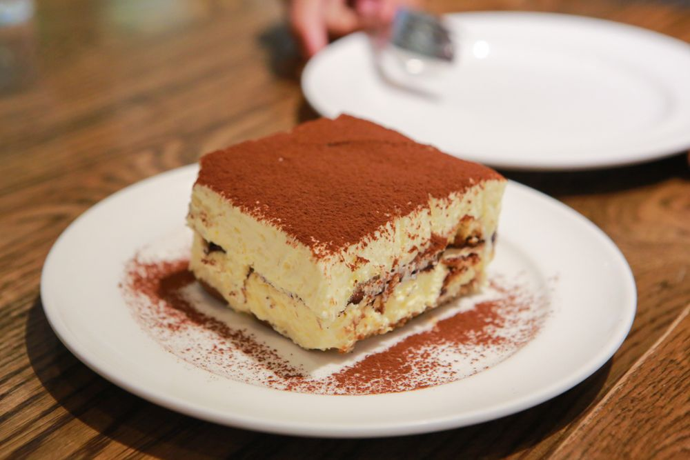
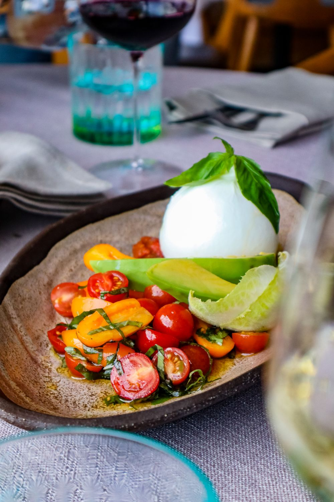

✳ CUCINA & CAFFÈ / BENGALURU
Pizza from the fire. Pasta by hand.One more chair at the table.
✳ THE KITCHEN

Burrata, cherry tomatoes, avocado and torn basil.
Long ribbons, cherry tomatoes and soft cheese.
Espresso-soaked fingers, mascarpone and dark cocoa.